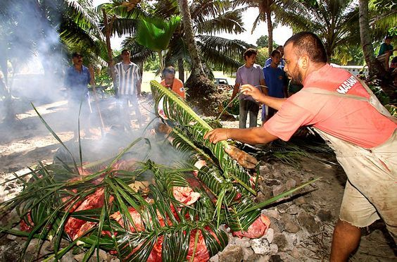

Fiji
Tradition
Firewalking ceremony is an ancient Fijian ritual, with origins on the island of Beqa, where they believe that the power was given by a god to the Sawau tribe. The fire walkers must observe two strict taboos for two weeks before a firewalk: They can not have any contact with women and they cannot eat any coconuts.
Yaqona(kava) is Fiji's traditional ceremonial drink. It is made from the pounded roots of a local pepper plant mixed with water and is consumed from a communal coconut shell in a ceremony. You have to sit on the floor in a circle as the kava is prepared in the tanoa bowl.
The lovo feast is a traditional Fijian meal which prepared in an underground oven called a lovo. In a large hole, Fijians place wood and large, flat stones and heat the stones until they are red hot. They then remove the remaining wood and spread the stones out until they are flat. Then the types of food they cook are - pork, chicken, fish, sweet potatoes, yams, cassava, and taro. they wrapped them banana leaves and placed, largest items first, onto the hot stones. It is covered with more banana leaves, coconut stalks, and damp burlap sacks and left to cook for about two hours.
